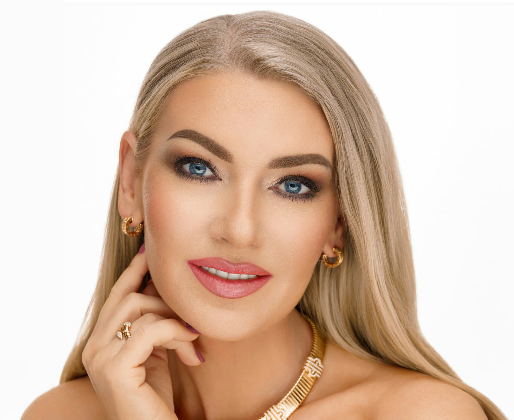
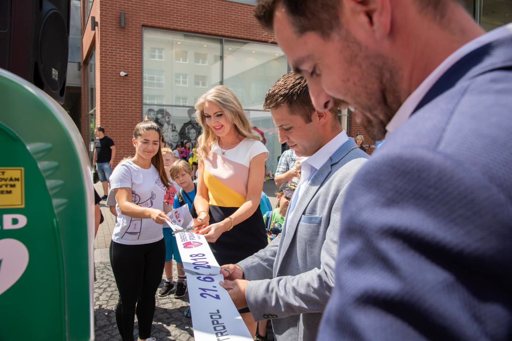
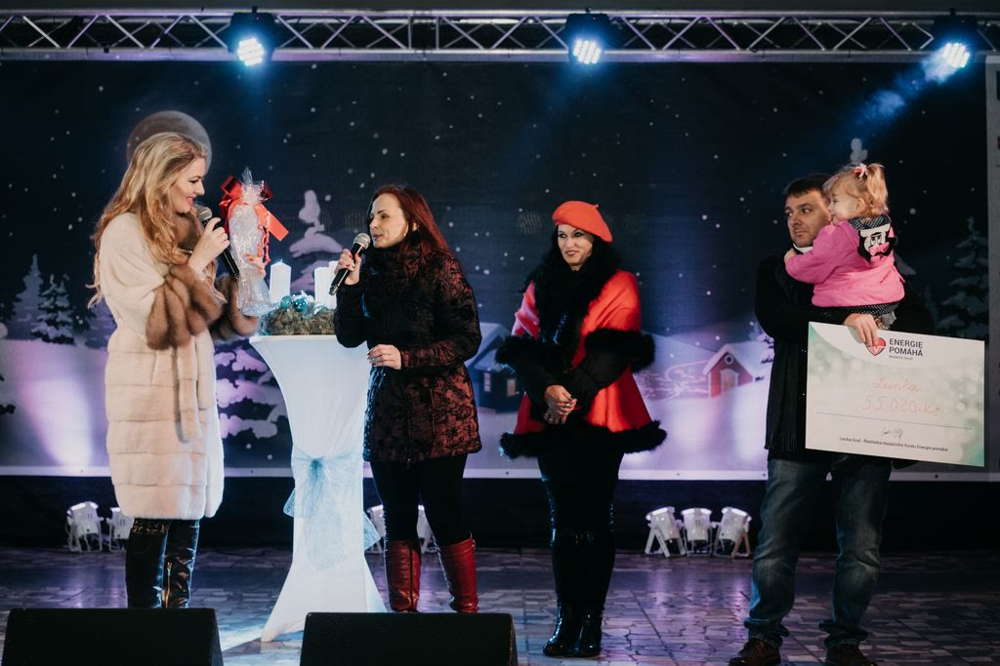

Lenka Graf
Soprán mezi operou a současností
O Lence

Lenka Graf je sopranistka a filantropka. Během své pěvecké kariéry se stala ikonou české crossover scény a má za sebou spolupráce se slavnými hudebními producenty a mnoho vystoupení u nás i v zahraničí. Klasická hudba pro ni nikdy nebyla „vážná“, miluje ji od dětství a baví ji hledat nové cesty, jak její krásu přiblížit širšímu publiku.
Založila Nadační fond Energie pomáhá, který kromě podpory konkrétních dobročinných projektů vytvořil unikátní vzdělávací program Energetická Expedice zaměřený na energetickou gramotnost žáků základních škol.
Středobodem života pro Lenku vždy byla a je rodina. Je maminkou dvou dospělých dětí a její rodičovská zkušenost se přirozeně protíná s původně vystudovanou pedagogickou profesí. Mimo jiné i proto se na podporu dětí a jejich vzdělávání zaměřila ve své dlouhodobé charitativní práci.
Žije mezi Českem a Floridou. Dva domovy pro ni znamenají dvojí inspiraci i cenný nadhled. Čerpá energii setkáváním s rodinou a přáteli, sportem, cvičením jógy a jak jinak než opět hudbou a zpěvem. Nejoblíbenější formou meditace ke zklidnění těla a mysli je relaxační hudba s křišťálovými mísami doprovázená zpěvem. Mezi její koníčky patří také móda. V nádherných róbách se nezapře vytříbený cit pro eleganci a šarm operní divy.
Kariéra
Milníky- Vzdělání
Vystudovala obor bohemistika a hudba na Pedagogické fakultě Univerzity J. E. Purkyně v Ústí nad Labem. Hudební vzdělání dále rozvíjela na pražské HAMU a ve studiu zpěvu pokračovala také v USA, mimo jiné na State College of Florida pod vedením Melodie Dickerson.
- 2017
V roce 2017 vydala debutové album Láska věčná, na němž propojila operní zpěv s popem. Na něj navázala dalšími nahrávkami včetně alba Vánoční poselství. Se zpěvákem Petrem Kolářem natočila romantický duet Nechme lásku plout.
- Spolupráce
Spolupracovala s mezinárodně uznávanými autory a producenty. Charlie Midnight pro ni napsal píseň You Are Not Alone, podílel se také na skladbě I Dare. Singl Everything Is Part Of One je dílo Johna Shankse, držitele Grammy a producenta řady světových hudebních hvězd.
- Turné
Jako host absolvovala německé turné s crossoverovým interpretem The Dark Tenor, s nímž také vystoupila s duetem své písně You Are Not Alone.
- 2023
V prosinci 2023 vystoupila jako první česká zpěvačka na tradičním adventním koncertu v Drážďanech. S legendárním pěveckým sborem Dresdner Kreuzchor zpívala před téměř 28 tisíci diváky na vyprodaném stadionu koledu Narodil se Kristus pán v češtině a němčině.
- 2025
V červnu 2025 byla speciálním hostem pražského koncertu slavné crossover skupiny Il Divo v O2 Universu.
- Benefice
Pravidelně se objevuje na adventních a benefičních koncertech po boku osobností české hudební scény, například Štefana Margity, Pavla Šporcla, Daniela Hůlky, Olgy Lounové a dalších.
- Každoročně
Každoročně pořádá vlastní adventní benefiční koncerty se známým dívčím smyčcovým triem Inflagranti.
- 2025
V roce 2025 navázala výraznou spolupráci s Michalem Dvořákem ze skupiny Lucie. Aktuálně nejnovější píseň Křídla snů, inspirovaná Dvořákovou symfonií Z Nového světa, propojuje českou klasiku se současným crossoverovým aranžem a symbolicky se vrací k tématu domova. Cellové sólo k písni nahrál věhlasný švýcarský cellista Jodok Vuille, známý také jako influencer Jodok Cello s téměř 7 miliony fanoušků na sociálních sítích.
- 2026
V květnu 2026 vystoupila v pražské O2 areně jako host jubilejního galakoncertu Štefana Margity k jeho 70. narozeninám za doprovodu PKF Prague Philharmonia.
Hudba
Vyberte skladbu a pusťte si ji přímo zde — tři nahrávky, jeden dotek.
„Hudba je most mezi tím, co bylo, a tím, co teprve přijde."
Od debutového alba Láska věčná, které propojilo operní zpěv s popem, přes spolupráce s Charliem Midnightem a držitelem Grammy Johnem Shanksem až po nejnovější singl Křídla snů s Michalem Dvořákem — Lenčina tvorba spojuje klasiku se současností.
Nadační fond
Energie pomáhá
Nadační fond Energie pomáhá založila Lenka Graf v roce 2017 s posláním pomáhat tam, kde může mít podpora dlouhodobý dopad. Zaměřuje se především na děti, jejich zdravý rozvoj, vzdělávání a smysluplné kulturní a dobročinné projekty.
Postupně se stěžejním tématem fondu stala energetická gramotnost jako jedna z klíčových dovedností pro život v moderním světě. Energetická Expedice, dvouměsíční komplexní interaktivní vzdělávací program pro žáky druhého stupně základních škol, získal záštitu Ministerstva školství, mládeže a tělovýchovy, Ministerstva průmyslu a obchodu i prezidenta České republiky. Zapojilo se do něj již 250 škol.


Nadcházející koncerty
-
Pátek11Prosinec 2026
Zámek Zákupy
Zákupy2. ročník Popelčiných vánočních trhů
Začátek 15:00 Mapa ↗ -
Neděle13Prosinec 2026
Palác Žofín
PrahaHvězdy Vánoc V. — vánoční galakoncert v doprovodu Orchestru Karla Vlacha
Začátek 18:00 Mapa ↗ -
Úterý15Prosinec 2026
Městské divadlo
Jablonec nad NisouVánoční talkshow Pavla Trávníčka
Začátek 19:00 Mapa ↗ -
Středa16Prosinec 2026
Břevnovský klášter — Tereziánský sál
PrahaHost vánočního recitálu Leony Machálkové v doprovodu pianisty
Začátek 19:00 Mapa ↗
Další termíny průběžně doplňujeme. Odebírat novinky
Press
Materiály pro média — fotografie ve vysokém rozlišení a profesní životopis Lenky Graf.
Fotogalerie
Ve vysokém rozlišeníCV pro novináře
Stručný profesní životopis — vzdělání, kariéra, významné spolupráce a nadační činnost.
- Sopranistka a filantropka
- Zakladatelka NF Energie pomáhá (2017)
- Žije mezi Českem a Floridou
Soubory ke stažení připravujeme.